At first we need to check if the executable was packed with a packer of some sort.
I’ll use “DetectItEasy” for this check:
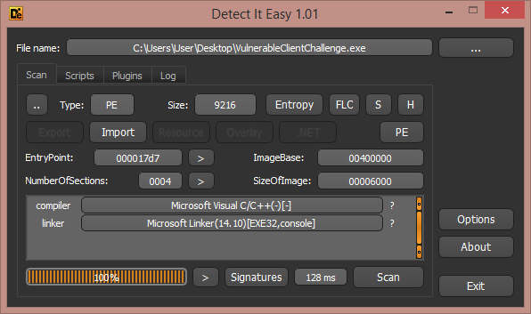
Nice, the executable isn’t packed!
It’s now time for RE, let’s use IDA Pro. (I use the newest version - 7.0)
When I try to RE something I always open the “Strings window” first, to find
some helpful messages which can have xrefs for important functions.
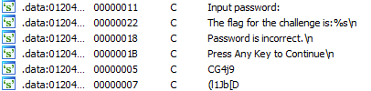
Okay, there is a message about the flag!
Let’s see the instruction listing of the first xref for this message.
I won’t show the whole structure of the program in one screenshot, only
the important part of the code. We can see that the return value of the
last function in the following screenshot is being checked.
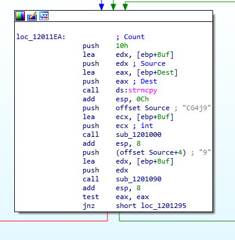
Green arrow - prints error message.
Red arrow - makes one more procedure and after it, prints the flag.
So as you can see the buffer which was used for the user’s input will be copied,
but not the whole buffer. Only the first 16 bytes are being copied and this size
is used in more functions that I saw before. Hence, we can conclude that
the password’s length is 16 characters long.
Okay, I want to check the first function (sub_1201000) after the string-copy:
To do this I used the Hex-Rays decompiler to understand the code better.
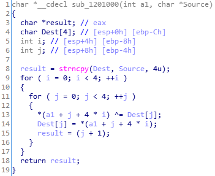
As you can see - there is some xoring process with our input!
The xoring starts with some const 4 bytes - ‘CG4j’:
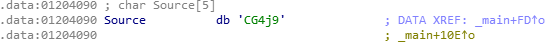
Only the first 4 bytes are used for the first step of the first decryption.
The algorithm of this function
For the first 4 bytes:
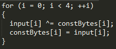
For the next 12 bytes:
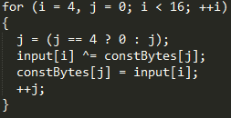
The next step is to watch what next function does: 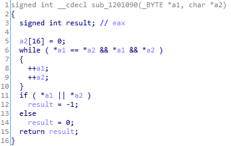
After a fast analysis, I understand that the function is the check function
that checks the first stage of the decryption. Of course it checks
our xored input with some const buffer. Why shouldn’t we get the buffer and
find the original key with the algorithm we found and with the const buffer?
The const buffer is placed in a pointer which is stored in the parameter a2.
Let’s find out what character from this buffer was pushed into the stack as the
function’s parameter:
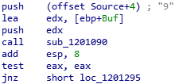
(In the screenshot: Some buffer which starts from the 5th character’s offset)
Remember the previous buffer - the one which we only used its first bytes?
It is the same buffer, and now we will use the next 16 bytes of it from offset 4.
This is the buffer’s screenshot:
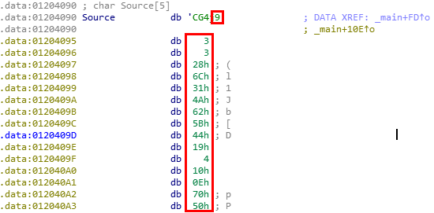
16 bytes!
I wrote a script on python that uses the learned algorithm and gives the key for us:
key_hash = '\x39\x03\x03\x28\x6C\x31\x4A\x62\x5B\x44\x19\x04\x10\x0E\x70\x50'
final = '\x7a\x44\x37\x42' # After xoring with prev. Xor key with 4 bytes
for i in xrange(0, 12):
final += chr(ord(key_hash[i]) ^ ord(key_hash[i + 4]))
print final
After the first decryption I got the key: zD7BU2IJ7uSfKJiT
Okay, let’s test it. Maybe it will give us the fla?
Huh, yep! I was right:
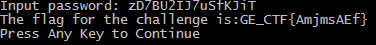
Finally the flag is: GE_CTF{AmjmsAEf}
* About the second decryption - It’s just another xoring of this key with another const buffer. There’s no need to show it because it decrypts itself correctly.